Menu editor
Edit the game's menus (.menu) as text and on a 640x480 canvas at the same time - read, drawn and operated like in the game.
Open a menu#
Click Menu Editor in the mode bar. Open from game lists every ui/ menu of the game set up in the preferences (read from the .pk3, never changed); Open file or dropping a file opens one from disk. The path decides how the file is read, exactly like the game: ui/jamp/, ui/jk2mp/ and ui/MD_MP/ with the multiplayer precompiler (#include, #define, macros, menudef.h), everything else like single player.
Engine messages shows what the game would print while loading the file, word for word and with the line (for example Unknown item keyword 'foo' Line #21). A click jumps to the line; the live diagnosis marks it in the text (Live diagnosis).
Canvas and pages#
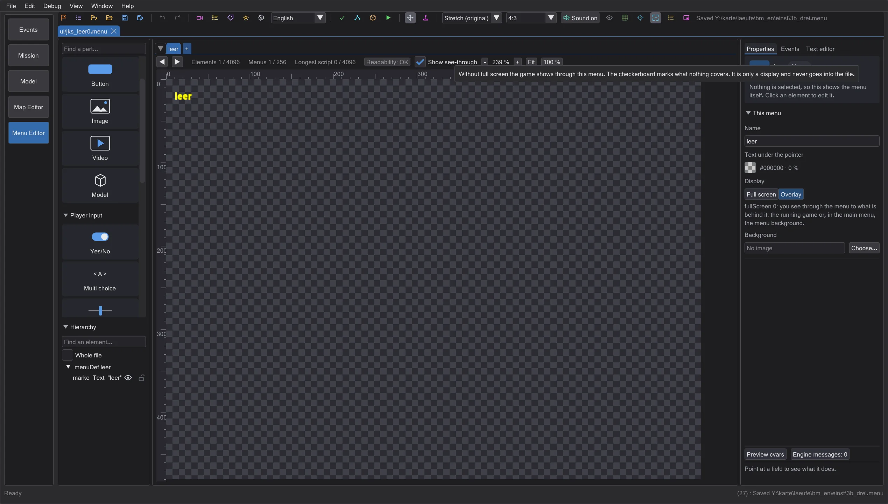
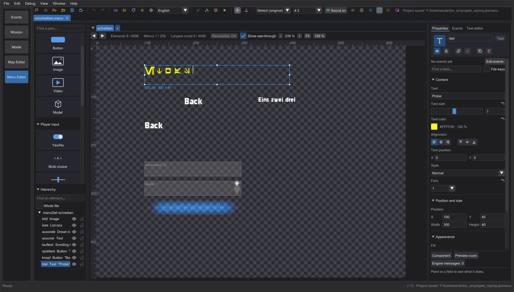
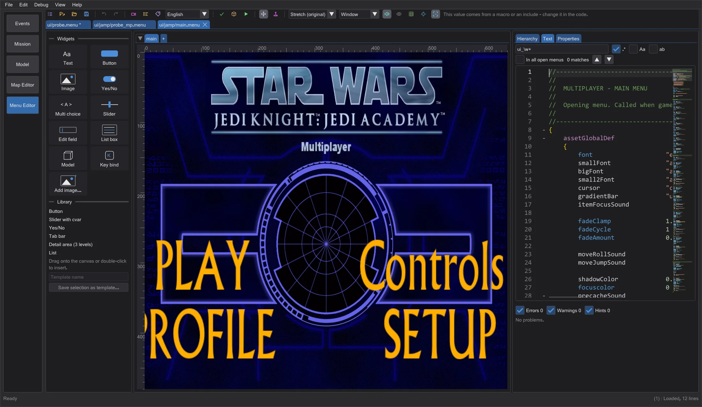
Every menuDef of the file is a tab above the canvas; items that are shown by a cvar with several values (cvarTest + showCvar, like ui_tab pages) get a tab per value. + adds a new menuDef. The canvas is the game's virtual 640x480 screen: Stretch (original) like the original game, 4:3 with bars, and preset resolutions to check the aspect ratio.
- A click selects (Shift/Ctrl adds) and never moves anything. Press a selected element again and drag it to move it - the whole selection moves along, in one undo step; the white handles resize. Where elements overlap, a press means the front one, the one with the frame and name under the pointer; Alt+click goes through the stack, Alt+drag moves the selected one even when it is covered. Only the numbers of
rectchange in the text - comments and indentation stay. - An element keeps its type: the card at the top of Properties only shows it. For another type, insert a new element. In the text editor you can still write anything; if a line makes the game drop the whole menu, the preview reads on, keeps all elements in place and says above the canvas which line it is.
- Ctrl+Z, Ctrl+Y and the arrows in the bar work wherever the focus is in the menu editor and also restore the selection. Only a field you are typing in and the text editor use their own keys; selecting something is not a step.
- Zoom: Ctrl+mouse wheel zooms around the pointer (25 to 800 %), Ctrl+0 fits, Ctrl+1 is 100 %, the middle button or Space+drag moves the view. The zoom is only a view: it is not an undo step and not in the file. Rulers, handles, snapping and dragging stay right at every step. The canvas takes the shape of the game window set in the bar, without one it is 4:3; it never stretches with the panel, so elements look as high as in the game. Over the text editor the same keys change its font instead: what lies under the pointer counts.
- Mouse pointer: It shows what a press does: resize arrows on the handles and on the edges of the selected element (the edges resize too), the move pointer on the element itself, the text cursor over text.
- Write text in place: Double-click an element on the canvas and type. The text appears in the game's font, size, colour and wrapping, with cursor, selection, copy and paste. Esc discards, Enter or a click elsewhere keeps it as one undo step; Ctrl+Enter starts a new line where the element wraps. A text from the game (
@MENUS_...) stays as it is: the element gets its own text in your project's text package, and the other languages keep their translation. Where the text comes from a cvar, the game itself or an image, the double-click says so. Hierarchy shows the text in the row, Properties has it at the very top. - Properties has a fixed card at the top with symbol, name and type and one row of buttons: visible, locked, forward, backward, duplicate, delete. Below it are the events that exist, a field search and File keys, which adds the key in the file to each plain name; the search finds both. Fields stand in groups by purpose, and a folded group shows a summary on the right. Only what the game reads for this kind of element is shown; lines in the file that have no field stay there and appear under More entries in the file.
- Numbers and colours: Click a number to type it, drag its label to change it; values stay when you click elsewhere. A colour is one line; a click on the colour field opens R, G, B, A and your recent colours. The line at the bottom of the panel says at once what the field under the pointer does. A small arrow marks a value that differs from the game's default; a click on it removes the line from the file.
- Alignment stays: The alignment buttons write
textalign,textalignxandtextaligny, nothing else. As long as these numbers fit the rule, a centred or right-aligned text stays in place when the element changes size, also vertically; a number of your own switches that off for this element. - With nothing selected the panel shows the menu itself: name, Full screen or Overlay, background and, under Events, what happens when it opens, closes or Esc or Enter is pressed. With two or more elements it shows Change all (text size and colour, mixed values are marked) and Arrange, each one undo step. Component, Preview cvars and Engine messages are small buttons at the foot of the panel.
- An empty menu: With full screen the game draws nothing underneath. In single player an empty menu is black (without
backcolor, even a plain image inbackgroundstays invisible); in multiplayer the game shows its grey default box until abackgroundor an element covers it, and the diagnosis says so. Without full screen you see through the menu; the canvas marks this with a checkerboard, which you can switch off and which never goes into the file. - Snap to edges snaps to edges and centres of the other items, the screen and your guides (drag them out of the rulers); Snap to grid to the grid. Alt switches snapping off while dragging, Shift keeps the direction. Arrow keys move by 1, with Shift by 10. A new, pasted or duplicated element never lands exactly on one of the same size: it moves 20 points right and down. Dragging with Alt puts it exactly where you drop it. Frames lying exactly over each other show their hint only once.
- The left panel holds the parts as tiles: Show for what is only seen, Player input for what the player operates, Ready-made for parts with everything already set (the tooltip says what each contains and how many elements), My templates for your own. Drag a tile onto the canvas: a frame shows where it lands and it snaps like a moved element. A double-click puts it in the middle, next to what is already there; a plain click does nothing. Button comes with a visible fill. Save selection as template works only with a selection and asks for the name then; your templates show a small picture of their elements and can be renamed and deleted, and a deleted one can be brought back.
- Image and video: Inserting sets a frame and opens no file dialog. It stays selected and shows on the canvas what to do; that note is only in the preview, never in the file. A double-click on the frame or Choose in Properties opens the choice: images and shaders from game and project with search and pictures, or videos from the game, and From file. A video from a file goes through the window that converts it; a game video is not copied, only its shader goes into the package. Whole screen, behind everything stretches a frame over the whole screen behind everything. Inserting is one undo step and choosing is one, also for the package. Menu videos are silent in the game. Without a choice the game shows a grey box, which the check names and the export warns about.
- Bring forward/Send backward on the card change the drawing order (the game draws in file order). The lock keeps an item from moving; the eye writes
visible.
Select, right-click, manage menus#
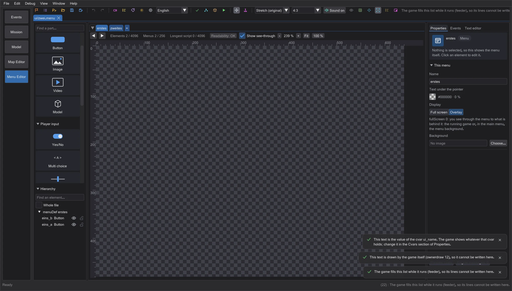
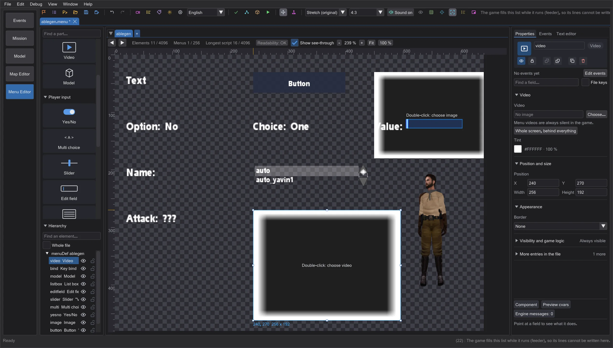
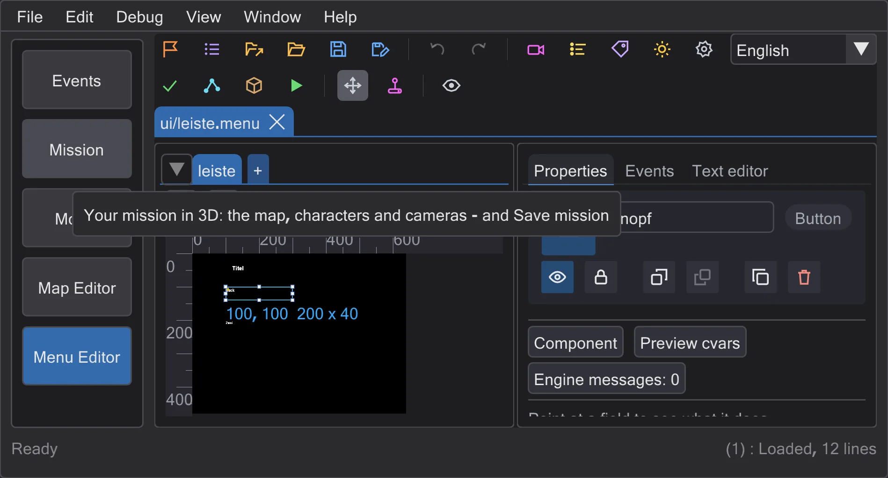
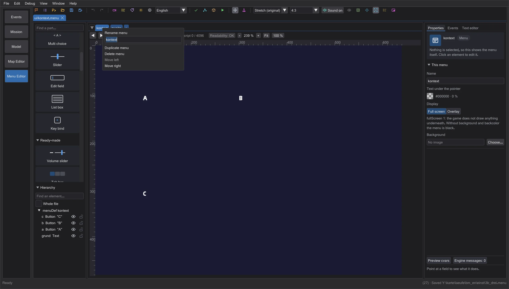
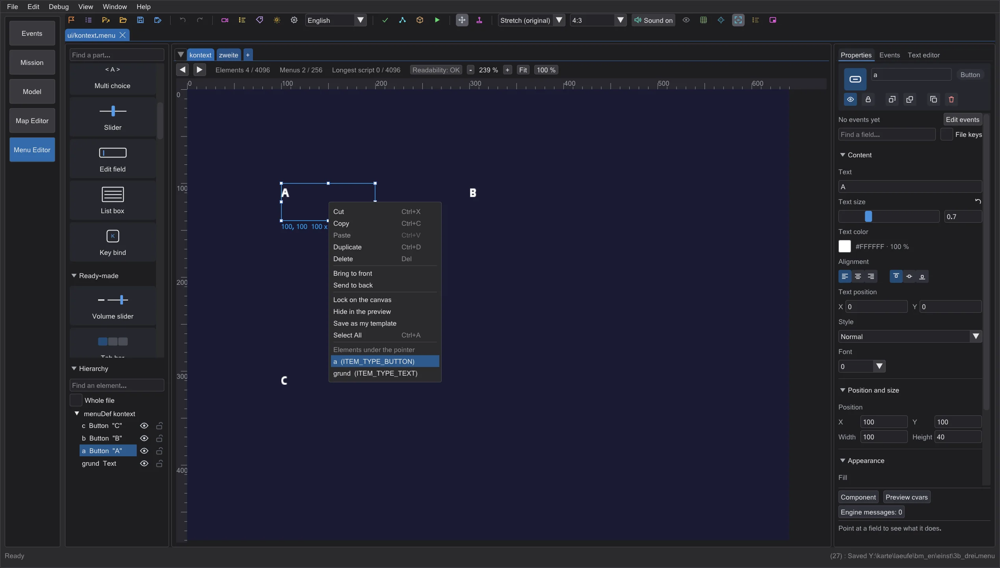
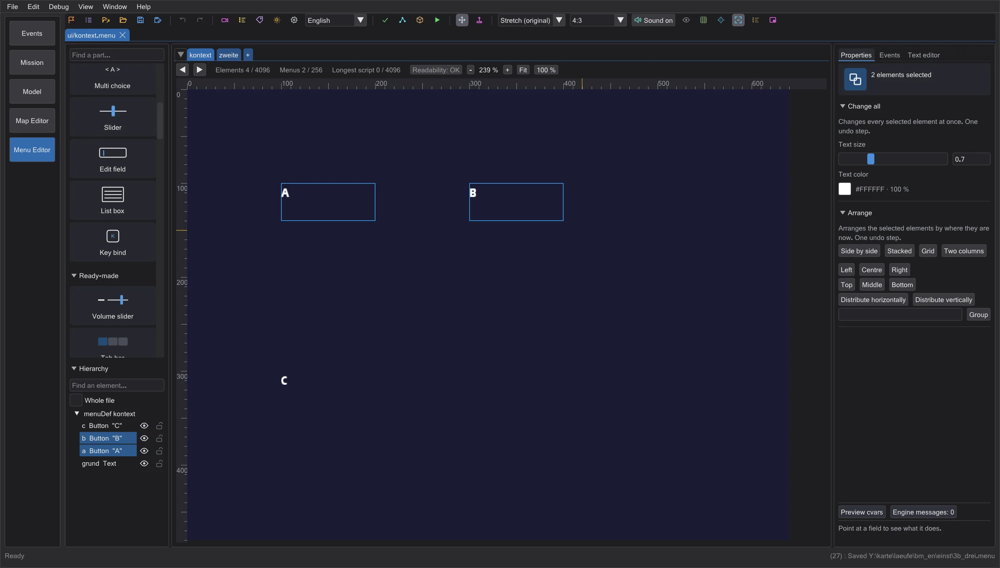
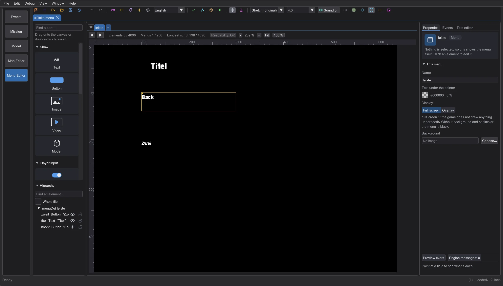
- Select several: drag from an empty spot to draw a frame; it selects everything it touches. Ctrl or Shift adds to the selection, Ctrl+A selects everything. Locked and hidden elements stay out.
- Right-click an element or a row of the hierarchy: cut, copy, paste, duplicate, delete, bring to front, send to back, lock, hide in the preview, save as your own template. On the canvas the menu also lists everything under the pointer.
- Backgrounds let clicks through: a decoration that fills the whole screen cannot be moved by accident. To change it, choose it in the hierarchy, in the right-click menu or with Alt+click.
- Manage menus: right-click a tab above the canvas to rename, duplicate, delete or move its menu. Renaming also changes
openandclosein this file. Each is one undo step. - Little room: the two arrows above the canvas fold the left and the right panel. In a small window the left panel folds by itself, and the view switches move behind the View button.
Conditions: Condition chooses whether a setting shows, hides, enables or disables the element. Choices of a Multi choice element are a list of text and value. Lists and game-drawn elements have the group Filled by the game; what the game could not read is refused with a message and the menu stays intact.
Interact and cvars#
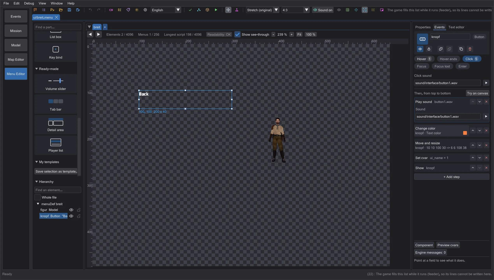
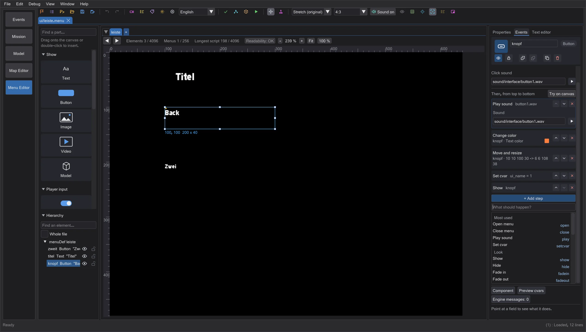
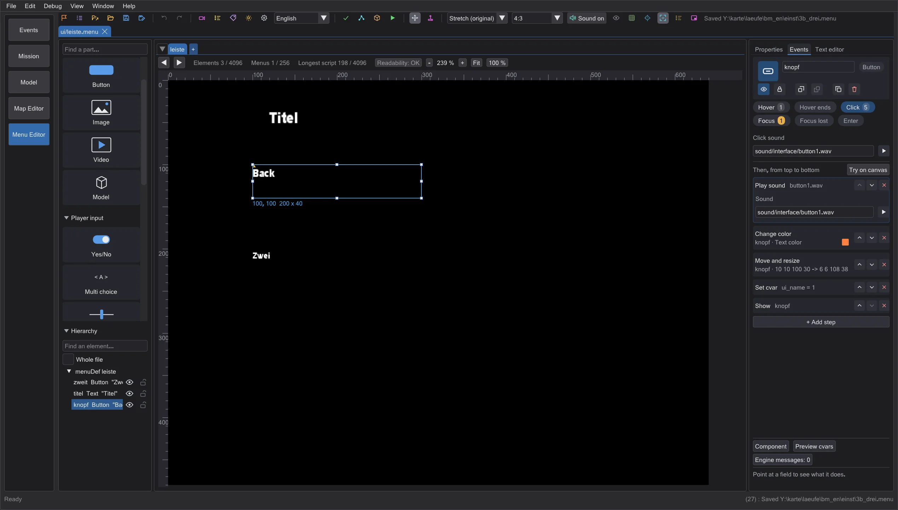
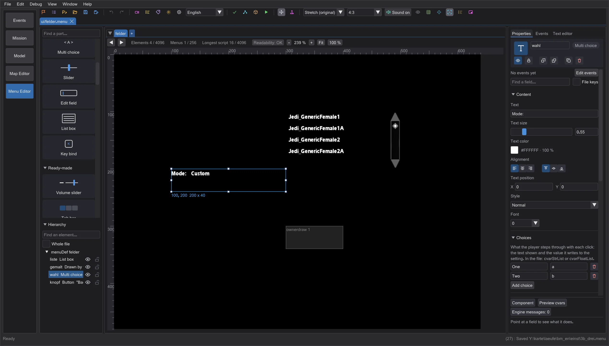
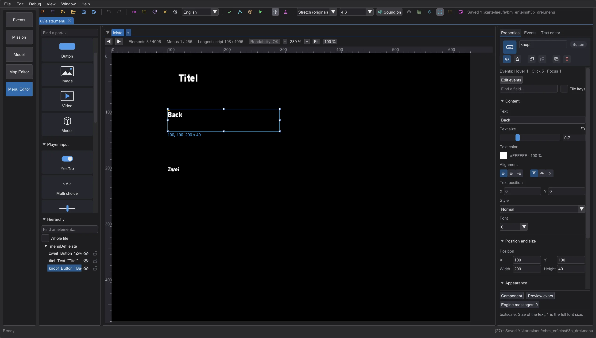
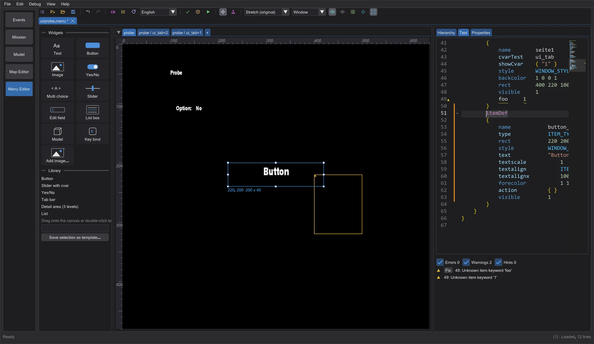
Interact runs the menu like the game: hovering gives focus (mouseEnter, onFocus), a click runs the item's action, yes/no, multi choice and sliders change their cvar, and open, close, show, hide, setfocus, setcvar, setitemtext, transition ... work like in ui_shared. What needs the game (sounds, exec, uiScript) appears in Script log.
Preview cvars lists every cvar the menu reads or sets, the ones that control visibility first, with the values that occur. Change them to see other states. They exist only in the preview - your game configuration is never touched.
Code editor#
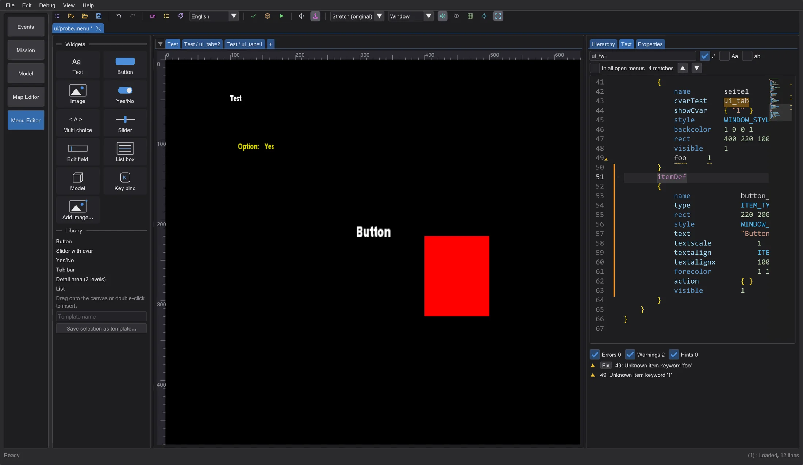
ui_tab shows the red box, a click on Yes/No changes ui_probe.| Ctrl + wheel / Ctrl + 0 | font size of the text editor, 50 to 300 %, with the pointer over the text; Ctrl+0 back to the default. Only a view: no undo step, never in the file, the size is remembered |
| Alt + Z | wrap long lines on or off, as in VS Code (on by default, the file does not change); without wrapping Shift+mouse wheel or the scrollbar at the bottom scrolls sideways |
| Ctrl + F / Ctrl + H | find and replace, as in the script section (regex, case, whole word, all open menus). Replace All is one undo step and reports the count; Ctrl+H puts the cursor in the replace field; matches are marked in the minimap |
| Ctrl + D / Ctrl + Shift + L / Alt + Click | next occurrence / all occurrences / extra cursor (multi-cursor) |
| Ctrl + Space | completion: keywords, cvars, item names, shader paths, @MENUS strings |
| F12 / Ctrl + Click | go to the menuDef or itemDef of the name under the cursor |
| Ctrl + F2 / F2 / Shift + F2 | bookmark like in the script editor (also a click in the margin) |
| Ctrl + / , Tab / Shift + Tab | comment lines, indent / outdent |
The margin works like in the script editor: orange = changed since saving, green = changed and saved, blue = back to the state when opened. menuDef, itemDef and script blocks fold with the +/- next to the line numbers. Clicking an item on the canvas jumps to its itemDef, and the cursor in an itemDef selects the item.
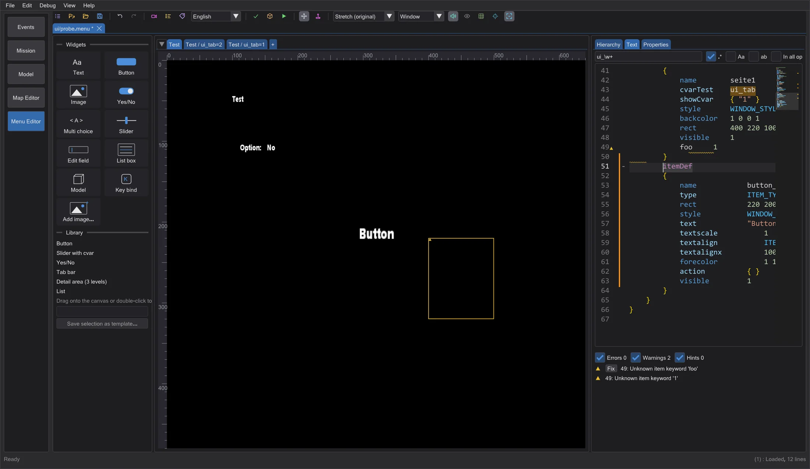
Save and export#
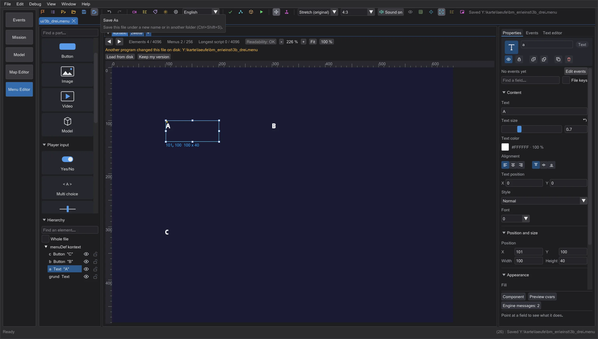
Save writes the text exactly as it is in the editor; a file opened from the game is saved elsewhere. Export .pk3 packs the menu under its game path plus your images into a .pk3. Neither ever writes into the game folders.